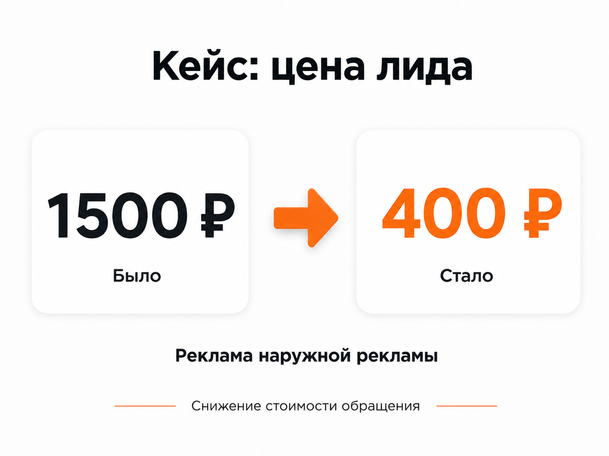

Блог о платном трафике
Продвижение рекламного производства: как получать заявки на вывески и наружную рекламу
Продвижение рекламного производства лучше строить вокруг конкретных услуг и реального спроса: вывесок, объемных букв, световых коробов, оформления фасадов и других изделий, которые компания действительно производит. Общая реклама в стиле «изготавливаем наружную рекламу» обычно дает меньше контроля, чем отдельные связки под разные задачи клиента.
Для рекламно-производственной компании я бы в первую очередь рассматривал Яндекс Директ, SEO, работу с локальным спросом и повторное взаимодействие с посетителями сайта. Но источник трафика сам по себе задачу не решает. Реклама должна приводить человека на страницу, где он сразу видит нужный тип продукции, реальные работы, условия и понятный способ запросить расчет.
Чем продвижение рекламного производства отличается от обычной рекламы услуг
У рекламно-производственной компании довольно специфический продукт. Клиент покупает не абстрактную услугу, а физический результат: вывеску, объемные буквы, световой короб, оформление входной группы или другую конструкцию.
При этом запросы могут сильно различаться по намерению.
Один человек ищет «изготовление вывесок», другой уже знает нужную технологию и вводит «объемные световые буквы», третий ищет подрядчика на комплексное оформление объекта. Если вести всех на одну общую страницу и показывать одинаковое объявление, часть релевантности теряется.
Есть и другая проблема. Запросы по наружной рекламе часто пересекаются с информационным спросом, самостоятельным изготовлением, вакансиями, рекламными агентствами и размещением рекламы. Производителю нужны прежде всего люди и компании, которые собираются заказать изготовление.
Поэтому продвижение начинается с разделения спроса.
Какие направления рекламного производства стоит продвигать отдельно
Структуру лучше строить по реальным услугам компании. Например:
- изготовление вывесок;
- объемные буквы;
- световые короба;
- неоновые вывески;
- оформление магазинов и офисов;
- рекламные конструкции;
- отдельные виды печати или изготовления, если на них есть самостоятельный спрос.
Не обязательно создавать отдельную рекламную кампанию и лендинг под каждую мелкую позицию. Разделять нужно те направления, у которых отличаются запросы, аудитория, средний чек, условия производства или посадочная страница.
Такой же принцип я использую и в других производственных проектах. Подробнее он разобран в статье «Реклама производственной компании».

Яндекс Директ для рекламно-производственной компании
Для большинства РПК поиск Яндекса - один из первых каналов, который имеет смысл проверить. Здесь можно работать с человеком в момент, когда он уже ищет изготовителя.
Например:
- заказать вывеску;
- изготовление объемных букв;
- световая вывеска на заказ;
- изготовление светового короба;
- наружная реклама для магазина.
Это значительно более сильный сигнал, чем просто интерес к дизайну, рекламе или оформлению бизнеса.
В актуальном Яндекс Директе Единая перфоманс-кампания позволяет отдельно выбирать показы на Поиске, в РСЯ и других доступных местах размещения. Это дает возможность разделять источники трафика и оценивать их по отдельности.
Как я бы разделял поисковую рекламу
В первую очередь по типам продукции.
Человек, который хочет заказать объемные буквы, должен увидеть объявление именно про объемные буквы и попасть на соответствующую страницу. То же самое относится к световым коробам, вывескам и другим крупным направлениям.
В объявлениях имеет смысл использовать реальные преимущества производства:
- собственное производство, если оно действительно свое;
- сроки;
- монтаж;
- гарантию;
- работу по конкретному региону;
- используемые технологии;
- расчет стоимости;
- фотографии выполненных проектов.
Добавлять преимущество только потому, что оно хорошо выглядит в объявлении, не нужно. Если компания не может подтвердить обещание на сайте или при разговоре с менеджером, оно скорее ухудшит качество заявки.
Подробнее структуру производственных кампаний я разбираю в статье «Яндекс Директ для производства».
Нужно ли использовать РСЯ
РСЯ имеет смысл тестировать отдельно от Поиска.
Пользователь в сетях обычно не находится в момент активного поиска вывески. Поэтому здесь сильнее влияют визуал, предложение и сегмент аудитории.
Для рекламного производства можно тестировать:
- посетителей сайта;
- аудитории, которые уже изучали определенный вид продукции;
- пользователей со смежными интересами;
- аудитории, похожие на существующих клиентов;
- отдельные предложения для бизнеса.
Но РСЯ нельзя оценивать по дешевым кликам. Если трафик дешевый, а запросов на расчет практически нет или обращения не подходят по бюджету и задаче, такая реклама пользы не дает.
Для этой ниши я бы оценивал РСЯ отдельно от поисковых кампаний и принимал решение по фактической стоимости качественной заявки.
Посадочная страница влияет на рекламу сильнее, чем кажется
Рекламное производство относится к нишам, где человек хочет увидеть результат до обращения.
Поэтому страница должна быстро отвечать на несколько вопросов:
- что именно вы производите;
- какие варианты исполнения доступны;
- как выглядят готовые работы;
- где работает компания;
- выполняется ли монтаж;
- как рассчитывается стоимость;
- что нужно предоставить для расчета;
- как отправить заявку.
Особенно полезны фотографии реальных объектов. Для потенциального заказчика портфолио одновременно показывает уровень производства, опыт и диапазон задач.
Если человек ищет световые буквы, лучше показать ему страницу со световыми буквами, а не отправлять на главную страницу с двадцатью направлениями.
Корпоративный сайт можно сохранить как центральную точку, но рекламные страницы стоит делать более сфокусированными.
Портфолио в рекламном производстве работает как часть воронки
В некоторых нишах клиенту достаточно описания услуги. Здесь визуальные доказательства намного важнее.
Я бы показывал:
- готовое изделие крупным планом;
- конструкцию на реальном объекте;
- дневной и ночной вид для световых конструкций;
- сложные проекты;
- примеры для разных типов бизнеса;
- процесс производства, если он действительно помогает подтвердить возможности компании.
Хороший кейс можно построить по простой схеме: задача клиента, что изготовили, особенности проекта, фотографии и итог.
Это полезно сразу для нескольких каналов. Кейсы помогают рекламному трафику принять решение, создают дополнительные посадочные страницы для SEO и дают материалы для ретаргетинга.
SEO для рекламно-производственной компании
Контекстная реклама позволяет работать с существующим спросом сразу после запуска. SEO решает другую задачу - постепенно увеличивает количество бесплатных переходов по коммерческим и информационным запросам.
Для рекламного производства я бы строил структуру сайта вокруг отдельных направлений услуг.
Например, вместо одной страницы «Наружная реклама» могут существовать самостоятельные страницы под основные виды продукции, если по ним есть отдельный спрос.
Дополнительно можно развивать раздел с полезными материалами:
- какие бывают вывески;
- из чего делают объемные буквы;
- как выбрать тип подсветки;
- от чего зависит стоимость вывески;
- что подготовить перед заказом;
- чем отличаются разные виды рекламных конструкций.
Такие статьи должны помогать человеку выбрать решение, а затем вести его внутренней ссылкой на соответствующую услугу.
Для SEO особенно полезно сочетание коммерческих страниц, кейсов реальных работ и информационных материалов. Пользователь может прийти из поиска по вопросу, изучить примеры и перейти к запросу расчета.
Локальное продвижение
Для компании, работающей преимущественно в одном городе или регионе, имеет смысл отдельно развивать локальную видимость.
Сюда относятся страницы сайта с корректной географией работы и карточки организации в геосервисах.
Особенно это полезно для запросов, где клиент явно ищет подрядчика поблизости. Производство наружной рекламы часто предполагает замеры, доставку и монтаж, поэтому расположение подрядчика может влиять на решение.
При этом не нужно многократно повторять название города на каждой странице. География должна быть указана естественно и только там, где она действительно относится к услуге.
Реальный пример продвижения производства наружной рекламы
У меня есть отдельный кейс по производству наружной рекламы.
Компания из Москвы производила объемные буквы, световые короба, неоновые вывески и другие вывески для бизнеса.
Проблемой был небольшой средний чек. Получать обращения примерно по 1500 ₽ технически было возможно, но при такой стоимости привлечения реклама становилась для клиента слишком дорогой.
После тестирования и оптимизации кампаний стоимость обращения удалось снизить примерно до 400 ₽. В рабочей конфигурации реклама давала около 15 лидов в неделю при стоимости ниже этого уровня.
В этом проекте хорошо видно, почему нельзя смотреть только на минимальный CPL. Когда стоимость заявки пытались снизить еще сильнее, одновременно сокращалось их количество. Поэтому оптимальной оказалась не самая дешевая заявка, а баланс между ценой и достаточным объемом обращений.

Что считать в рекламе рекламного производства
Минимально я бы отслеживал:
- Заявки через формы.
- Телефонные звонки.
- Обращения через мессенджеры.
- Запросы расчета.
- Квалифицированные заявки.
- Сделки.
CTR и цена клика нужны для диагностики кампаний, но для бизнеса важнее стоимость нормального обращения и стоимость клиента.
Например, один источник может приводить заявки дешевле, но большая часть пользователей хочет слишком маленький объем, другой вид продукции или услугу, которую компания вообще не оказывает.
Поэтому отдел продаж должен передавать информацию о качестве лидов обратно специалисту по рекламе.
При наличии CRM можно передавать в Яндекс Метрику офлайн-конверсии, включая более глубокие стадии сделки. Это помогает связывать рекламу не только с отправкой формы, но и с подтвержденными результатами продаж.
Частые ошибки при продвижении рекламного производства
Продвигать все услуги одной страницей
Чем шире ассортимент, тем менее конкретным становится предложение. Основные направления лучше разделять.
Гнаться за максимальным количеством заявок
Для производства имеет значение загрузка и экономика. Иногда 20 подходящих заказов ценнее 100 дешевых обращений с маленьким чеком.
Использовать слишком широкую семантику
Запросы со словами «реклама», «дизайн» или «оформление» могут иметь десятки разных значений. Расширять охват нужно постепенно и с обязательной проверкой поисковых запросов.
Не показывать реальные работы
Для визуального продукта отсутствие нормального портфолио сильно усложняет выбор подрядчика.
Считать любую заявку хорошей
Запрос на одну небольшую табличку и комплексное оформление нескольких торговых точек могут выглядеть одинаково в отчете Метрики, хотя для бизнеса их ценность совершенно разная.
Не связывать рекламу с продажами
Если рекламный специалист получает только количество заполненных форм, он не видит, какие кампании действительно приводят заказы.
Что лучше для рекламного производства - SEO или Яндекс Директ
Я бы не выбирал один канал вместо другого.
Яндекс Директ подходит для быстрого выхода на сформированный спрос. SEO постепенно расширяет присутствие сайта по коммерческим и информационным запросам.
На практике они могут усиливать друг друга. Директ быстрее показывает, какие направления и запросы реально приводят обращения. Эти данные можно использовать при развитии структуры сайта. SEO, в свою очередь, позволяет со временем получать часть трафика без оплаты каждого перехода.
Для большинства рекламно-производственных компаний рабочая схема выглядит так:
конкретная услуга → релевантный рекламный запрос → отдельная страница → портфолио → запрос расчета → квалификация заявки → сделка.
Именно такую цепочку я считаю основой продвижения производства, а рекламные каналы уже подключаю к ней.
Другие примеры работы с производственным и B2B-трафиком собраны на главной странице naklikay.ru и в материале «Реклама B2B-компании».
FAQ
Подходит ли Яндекс Директ для производства наружной рекламы?
Да, особенно если в регионе есть сформированный спрос на конкретные услуги: изготовление вывесок, объемных букв, световых коробов и других конструкций. Начинать логичнее с наиболее коммерческих направлений и постепенно расширять охват.
Нужно ли делать отдельный лендинг под каждый вид продукции?
Под каждую мелкую позицию - нет. Отдельная страница нужна там, где заметно меняются запросы, предложение и потребности клиента.
Что важнее: стоимость заявки или ее качество?
Качество. Низкий CPL бесполезен, если большая часть обращений не соответствует минимальному заказу, региону или возможностям производства.
Что запускать сначала: Поиск или РСЯ?
Если есть прямые коммерческие запросы, я обычно начинаю с Поиска. РСЯ подключаю отдельно для расширения охвата, ретаргетинга и тестирования дополнительных аудиторий.